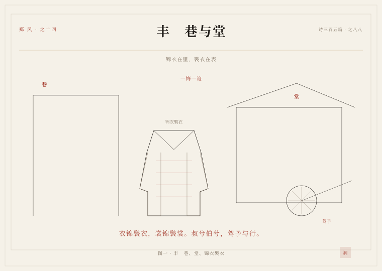
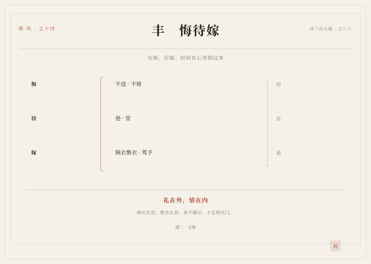

第八十八篇 丰
郑风 · 之十四 SJ088
朗读 · 普通话
依经文原文朗读，章次不读出；配古琴底乐，不改速、不加拖腔。全库同一音色（豆包 TTS），非播音员录制。
一 解题
诗三判：
- 谁在说：一个把“悔”说在前头、把“嫁”说在后头的女子。她先说：那个丰兮、昌兮的人，在巷口、堂上等我，我后悔没送、没随；后说：我穿上锦衣褧衣，请叔伯驾车，我要行、要归。
- 说什么事：四章。前两章写“悔”，后两章写“嫁”；时间在心里倒过来：先悔，后嫁。
从“巷”到“堂”，从“送”到“将”，从“衣锦褧衣”到“驾予与行/归”。
- 为何编在此：郑风之十四。087 写“隔水激将”，088
写“隔礼悔嫁”。一个把“来”喊过水，一个把“嫁”追过礼；都是“迟一步”。
《毛序》：“《丰》，刺乱也。婚姻之道缺，阳倡而阴不和，男行而女不随。”
朱子《诗集传》：“赋也。丰，丰满也。昌，盛也。俟，待也。送，送女也。将，行也。褧，禅也。锦衣、锦裳，嫁者之服。叔、伯，谓迎己者也。”朱子以此诗为“淫奔之诗”，与毛序“刺乱”异。
本库的看法：《丰》是一首把“嫁”写成“追”的诗。
前两章是“悔”：他等我在巷、在堂，我没送、没随；后两章是“追”：我穿好嫁衣，请叔伯驾车，我要行、要归。“悔”字出现两次，是全诗的开关；没有这两次悔，后两章的嫁衣就只是衣裳。锦衣是里，褧衣是表；美在内，礼在外。
这不是炫耀，是遮；遮住锦绣，才走得出门。
先辨五事：“丰”是丰采、丰满，不是“丰收”；“昌”是盛，不是“昌盛”的国名；“俟”是等待，不是“俟候”；“送”是送女，不是“送行”；“褧”是罩衣，不是“单衣”一件。
二 经文
第一章
子之丰兮，俟我乎巷兮。
悔予不送兮。
第二章
子之昌兮，俟我乎堂兮。
悔予不将兮。
第三章
衣锦褧衣，裳锦褧裳。
叔兮伯兮，驾予与行。
第四章
裳锦褧裳，衣锦褧衣。
叔兮伯兮，驾予与归。
分章：四章：一章三句，二章三句，三章四句，四章四句。
三 韵读
- 一章：丰、巷、送，东部；三句一韵。
- 二章：昌、堂、将，阳部；三句一韵。
- 三章：裳、行，阳部；“衣”字不入韵。
- 四章：裳、归，阳微通押；“衣”字不入韵。
读法：前两章东部、阳部，声音开阔；后两章阳部、微部，声音转细。由“悔”到“驾”，由“巷”到“归”；韵越收，心越急。
四 字义与名物
- 丰：丰采、丰满；形容男子容色。昌：盛；形容男子气盛。
- 俟：等待。巷：里巷。堂：堂上。由巷到堂，由外到内。
- 送：送女、送嫁。将：随行、送行。
- 衣锦褧衣：锦衣外面罩褧衣。褧：禅衣、罩衣；嫁者所服。
- 裳锦褧裳：锦裳外面罩褧裳。衣、裳：上衣下裳。
- 叔兮伯兮：叔、伯；这里指迎己者/驾车者。
- 驾予与行/归：驾车让我与你同行/同归。行，走；归，归于夫家。
五 今译
那个人丰采啊，在巷口等我。我后悔没有送你。
那个人气盛啊，在堂上等我。我后悔没有随你。
锦衣外面罩着褧衣，锦裳外面罩着褧裳。叔啊伯啊，驾车让我跟你走。
锦裳外面罩着褧裳，锦衣外面罩着褧衣。叔啊伯啊，驾车让我跟你归。
六 章旨
- 一章：写“巷”与“送”。他在巷口等，我没送；悔从“没送”开始。
- 二章：写“堂”与“将”。他进到堂上等，我没随；悔更深一层。
- 三章：写“衣”与“行”。穿上嫁衣，请驾车；由悔转到追。
- 四章：写“裳”与“归”。衣、裳倒装，行、归并置；急到话都倒了。
- 总收：礼可后，心不可迟；锦衣在里，褧衣在表。
前两章的悔，后两章的追；一悔一追，才是全诗。
七 诗教
- 兴：以“子之丰/昌”起兴。先写人，再写地，再写悔；人越美，悔越深。
- 观：观“婚姻之道”。男先待，女后随；一迟，就成“缺”。
- 群：婚姻不是两个人的事，有叔伯、有车、有礼；“驾予”是请人，也是请礼。
- 怨：诗里没有怨，只有悔。悔是怨自己，不是怨别人；这比怨更重。
八 分寸与边界
- 不可把“丰”当“丰收”。它是丰采；一读成庄稼，人就没了。
- 不可把“昌”当国名。它是盛；一读成昌国，诗就成地理。
- 不可把“送”当“送行”。它是送女、送嫁；一读成送客，礼就轻了。
- 不可把“褧”当“单衣”。它是罩衣；一读成单衣，锦衣就露在外面，礼就没了。
- 不可把四章当顺序。前两章是悔，后两章是追；一顺读，时间就平了。
九 存疑
- 诗旨：毛序“刺乱，婚姻之道缺”；朱子“淫奔之诗”。一礼，一情；本库两存，以“悔嫁”读。
- “丰/昌”：丰采、盛；一说“丰”为“丰肌”，“昌”为“昌盛”。两读相近。
- “叔伯”：指迎己者；一说指“送嫁者”。从“迎己”，才与“驾予”相应。
- “褧”：禅衣、罩衣；一说“单衣”。从“罩衣”，才见“衣锦尚絅”。
- 作者与年代：毛序不言作者；朱子以为“淫奔”。是否刺乱，无确证。
十 跨典
- 《礼记·中庸》：“《诗》曰：‘衣锦尚絅’，恶其文之著也。”——此诗“衣锦褧衣”的礼义；美在内，遮在外。
- 《礼记·昏义》：“父亲醮子而命之迎，男先于女也。”——男先待、女后随，是婚礼之序。
- 《孟子·滕文公下》：“丈夫之冠也，父命之；女子之嫁也，母命之。”——嫁有命，行有礼。
- 《诗本音》：四章韵读，丰、巷、送东部，昌、堂、将阳部，衣、裳、行阳部，见卷三。
十一 双卡与图
双卡八对：
| 丰（丰采、丰满） |
丰（丰收） |
| 昌（盛） |
昌（昌国） |
| 俟（等待） |
俟（俟候） |
| 送（送女、送嫁） |
送（送行） |
| 将（随行） |
将（将军） |
| 褧（罩衣） |
褧（单衣） |
| 锦衣锦裳（嫁服） |
锦衣锦裳（盛装） |
| 行／归（同行／归夫家） |
行／归（走路／回家） |

图一 · 丰 巷、堂、锦衣褧衣

图二 · 丰 悔、待、嫁
读图三处：
- 巷与堂两进：图一左巷口，右堂上，中间一道门；由巷到堂，是男方一步比一步近，也是女方一步比一步悔。
- 锦衣在里：图一中间一件锦衣，外面罩一件素色褧衣，只露领口与下摆；“衣锦尚絅”，美不露尽。
- 车在门外：图一右下角一辆车，只画轮与辕，不画马；“驾予与行”，车是礼，马是力；礼到，力才到。